Channel 9 Blog for Kathleen McGrath
Microsoft Help Viewer 1.1 - Updates Planned for Visual Studio 2010 SP1[WMV] [0:12:15] [2010/11/02] Paul O’Rear, a Program Manager on the Library Experience Team, walks us through an early build of Help Viewer 1.1, which will ship with Visual Studio 2010 SP1. Help Viewer 1.1 is intended to…
Introduction to Creating Coded UI Tests with Visual Studio 2010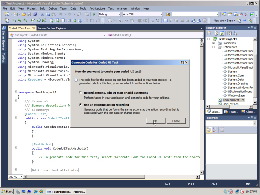[WMV] [0:12:56] [2010/03/03]This video provides an overview of the Visual Studio 2010 code generation features that allow testers to quickly and easily create coded UI tests directly from existing action recordings. Download the…
Authoring and Running Manual Tests in Visual Studio 2010 using Microsoft Test and Lab Manager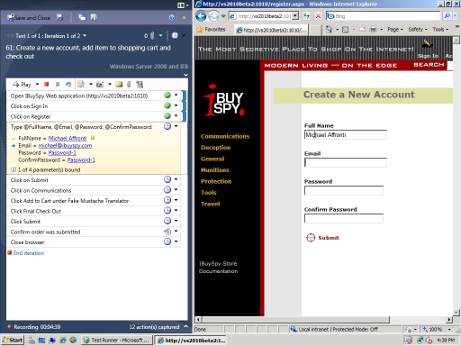[WMV] [0:13:34] [2010/02/12]This video demonstrates how to author and run manual tests in Visual Studio 2010 by using Microsoft Test and Lab Manager. You will learn how to author a manual test case, run the test using Microsoft…
Silverlight Object Binding in Visual Studio 2010 Beta 2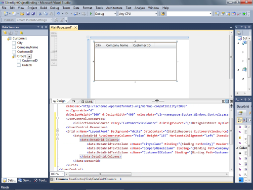[WMV] [0:10:54] [2010/02/04]In this video, programming writer Steve Stein demonstrates the new Visual Studio 2010 Beta 2 drag and drop data binding features applicable to Silverlight applications. The video demonstrates how to…
Binding Silverlight Controls to a Data Service in Visual Studio 2010 Beta 2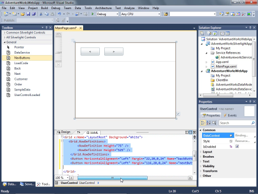[WMV] [0:15:33] [2010/02/04]
In this video, programming writer Steve Stein demonstrates the new Visual Studio 2010 Beta 2 drag and drop data binding features applicable to Silverlight applications. The video demonstrates how to…
Introduction to Test Case Management in Visual Studio 2010 with Microsoft Test and Lab Manager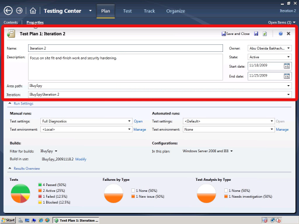[WMV] [0:11:25] [2010/01/22]This video demonstrates how to use the Microsoft Test and Lab Manager in Visual Studio 2010 to manage test suites and test cases. This video is based on the Application Lifecycle Management Hands-on…
Enabling Help in the Visual Studio 2010 Shell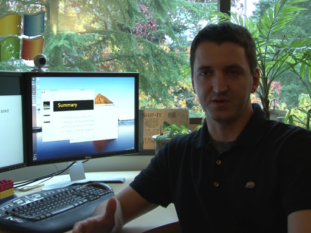[WMV] [0:08:37] [2009/12/10]
Ryan Linton, a Senior Program Manager on the Library Experience Team, walks us through a demo on how to enable Help in the Visual Studio 2010 Shell (Isolated). More details on the Shell can be…
Lists in F#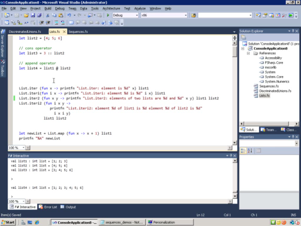[WMV] [0:23:59] [2009/11/12]
In this video, programming writer, Gordon Hogenson explains and gives examples of lists in F#.
You can also learn more in the topic
Lists (F#)
Kathleen McGrathVisual Studio User…
New MSDN Library views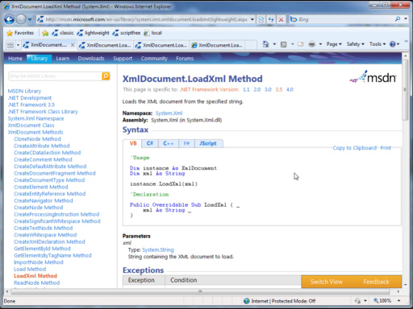[WMV] [0:09:36] [2009/11/07]
In this video, Mark D'Urso, a Senior Development Lead on the Library Experience Team, demonstrates the new Library views on MSDN:
Lightweight view
ScriptFree view
Classic view
…
Microsoft Help Viewer - New Help System in Visual Studio 2010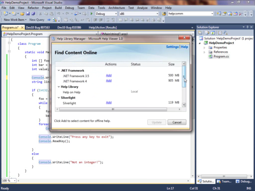[WMV] [0:10:31] [2009/11/06] In this video, Ryan Linton, a Senior Program Manager on the Library Experience Team, describes the new Help system in Visual Studio 2010 Beta 2. UPDATE: see the updates planned for the help…
Discriminated Unions in F#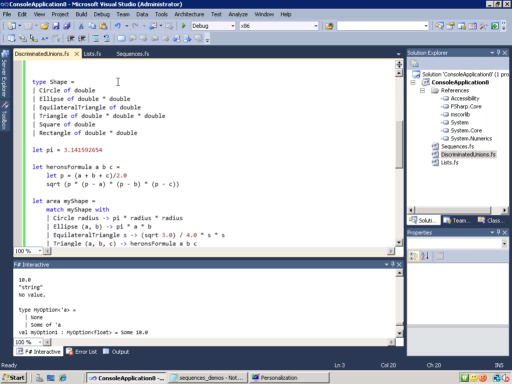[WMV] [0:15:28] [2009/11/04] In this video, programming writer, Gordon Hogenson explains and gives examples of discriminated unions in F#. You can also learn more in the topic Discriminated Unions (F#) Kathleen…
Creating a Web Part for SharePoint by Using a Designer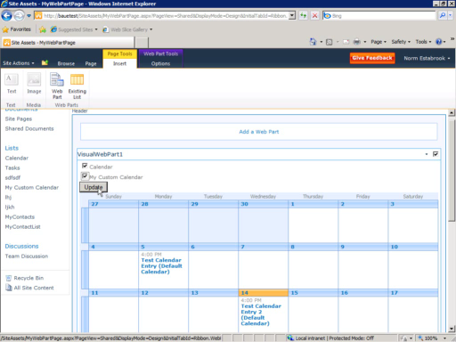[WMV] [0:06:45] [2009/10/29] In this interview, programming writer Norm Estabrook demonstrates how to create a Web Part for SharePoint by using a designer in Visual Studio. You can follow along step-by-step in the corresponding…
Embedding Type Information from Microsoft Office Assemblies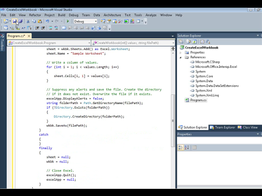[WMV] [0:03:50] [2009/10/24] In this video, Mick Alberts shows you how to embed type information into an application that uses Automation objects from Microsoft Office. Embedding type information enables you to run the same…
Creating an External List in SharePoint by Using Business Data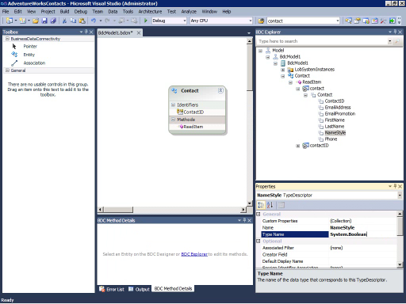[WMV] [0:16:32] [2009/10/22] In this interview, programming writer Norm Estabrook demonstrates how to create a model for the BDC service that returns information about contacts in a sample database, and displays the contacts in…
How to Use Named and Optional Arguments in Office Programming (C#)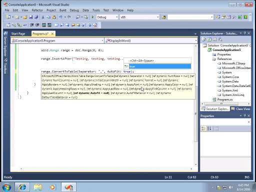[WMV] [0:04:49] [2009/08/22]This video demonstrates some of the tasks described in
How to: Use Named and Optional Arguments in Office Programming. Using Visual Studio 2010 Beta 1 and C#, I show you how to add text to a Word…
Binding WPF Controls to an Entity Data Model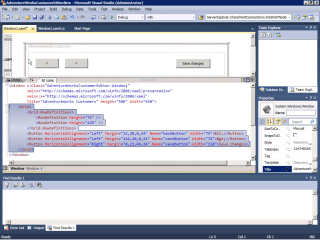[WMV] [0:09:50] [2009/07/30]In this interview, programming writer, McLean Schofield, demonstrates how to bind WPF controls to an entity data model, using Visual Studio 2010 Beta 1. You can also learn more in the…
Lambda Expressions in C++ [WMV] [0:07:51] [2009/07/25]
[WMV] [0:07:51] [2009/07/25]In this interview, programming writer Thomas Petchel demonstrates how to use Lambda Expressions in C++. You can also learn more in the topic: Lambda Expressions
in C++.
Kathleen…
Copying a Document to the End User Computer after a ClickOnce Installation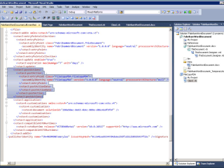[WMV] [0:05:45] [2009/07/18]In this interview, programming writer Mary Lee demonstrates how to deploy an Office solution and implement a post-deployment action that copies a document to the end user's desktop. You can learn more…
Active Patterns (F#)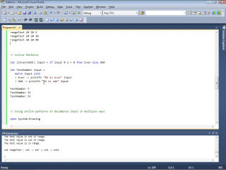[WMV] [0:16:02] [2009/07/10]
In this video, programming writer, Gordon Hogenson, continues the discussion of patterns by talking about active patterns, which you can use to customize and extend F#’s pattern matching…
Patterns and Match Expressions in F#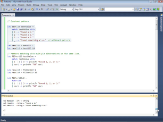[WMV] [0:19:35] [2009/07/07]
In this video, programming writer, Gordon Hogenson explains and gives examples of patterns in F# and explains the use of the match expression to control branching based on patterns in data. But…
Binding WPF Controls to Data in Visual Studio 2010 [WMV] [0:06:26] [2009/07/03]
[WMV] [0:06:26] [2009/07/03]In this interview, programming writer, McLean Schofield, demonstrates how to add data-bound WPF controls to an application. You can also learn more in the topic
Binding WPF Controls to Data in…
What's New in the Visual Studio 2010 Editor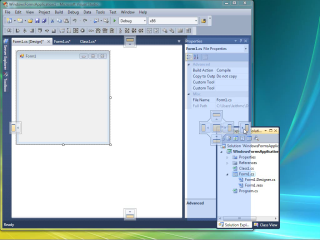[WMV] [0:06:45] [2009/06/27]In this interview, programming writer, Leith McCombs, demonstrates some of the new features in the Visual Studio 2010 editor. You can also learn more in the topic
What's New in the Visual Studio…
Implicit Line Continuation in Visual Basic 2010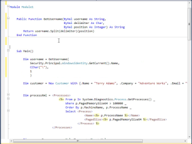[WMV] [0:07:09] [2009/06/20]
In this interview, Doug Rothaus, a programming writer on the Visual Studio User Education team, describes the new implicit line continuation feature in Visual Basic 2010. You can also learn more in…
Auto-Implemented Properties in Visual Basic 2010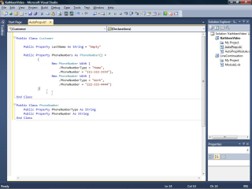[WMV] [0:07:44] [2009/06/13]In this interview, Doug Rothaus, a programming writer on the Visual Studio User Education team, describes the new auto-implemented properties in Visual Basic 2010. He also demonstrates some of the…
Deploying Multiple Office Solutions in a Single ClickOnce Installer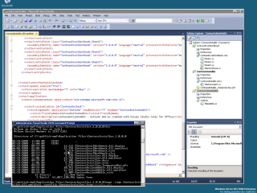[WMV] [0:06:07] [2009/06/05]
In this interview Mary Lee, a programming writer on the Visual Studio User Education team, describes the topic
Walkthrough: Deploying Multiple Office Solutions in a Single ClickOnce Installer and…
Creating Your First F# Program with Visual Studio 2010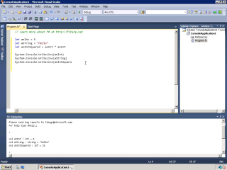[WMV] [0:05:09] [2009/06/05]
This video demonstrates some of the tasks described in Walkthrough: Creating Your First F# Program with Visual Studio.
I show you how to declare simple variables, write and test functions, and…